Costa Cálida · Mar Menor
Inmuebles en venta en San Pedro del Pinatar
Pisos nuevos y bungalows a un paseo de la playa en Lo Pagán, y villas con piscina privada, entre el Mar Menor y el mar abierto. Estos son los inmuebles que vendemos hoy en San Pedro del Pinatar, con una breve guía de las zonas y lo que cuesta de verdad comprar.
- 19inmuebles en venta en San Pedro del Pinatar
- desde 151.900 €un piso nuevo
- unos 35 minal aeropuerto de la Región de Murcia
- 2 maresel Mar Menor y el Mediterráneo
En venta ahora
Inmuebles en venta en San Pedro del Pinatar
Pisos nuevos de 1 a 3 dormitorios, bungalows con terraza y villas con piscina privada, muchos a menos de un kilómetro de la playa. Los precios son los de hoy; pregúntenos por la disponibilidad actual.
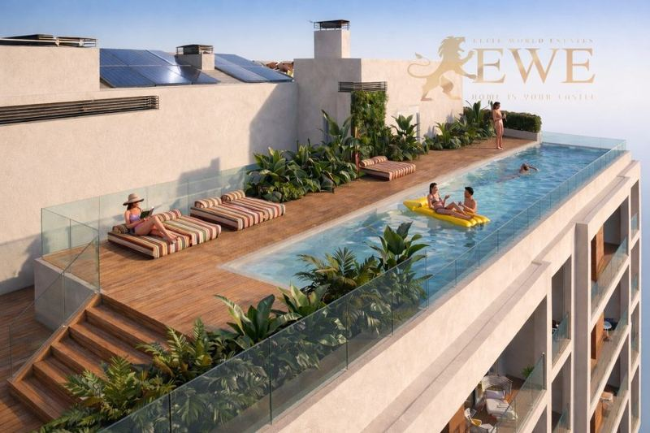
San Pedro del Pinatar
New Apartments 600 m from the Beach in Lo Pagán
151.900 €
1 dormitorio · 1 baño · 37 m²Ref. EWE3831
Entrega: 1Q 2028
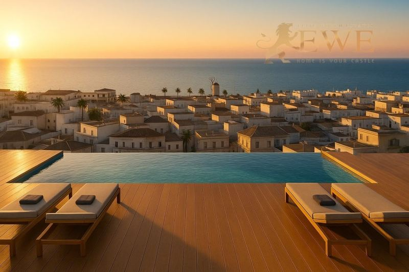
San Pedro del Pinatar
Fully equipped apartments 700 m from the beach in Lo Pagán, San Pedro del Pinatar.
168.900 €
1 dormitorio · 1 baño · 45 m²Ref. EWE3724
Entrega: 2Q 2027
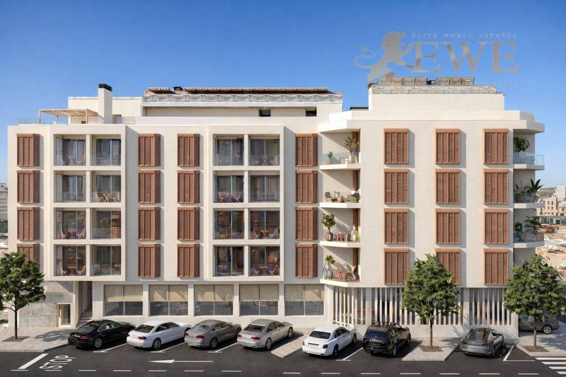
San Pedro del Pinatar
Modern Apartment 600 m from the Beach in San Pedro del Pinatar
231.900 €
2 dormitorios · 2 baños · 73 m²Ref. EWE3832
Entrega: 1Q 2028
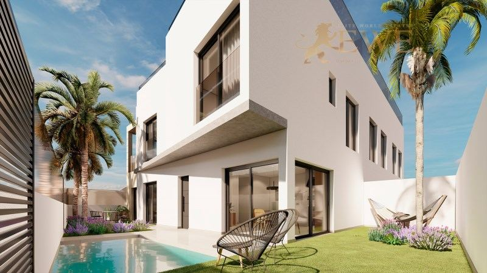
San Pedro del Pinatar
Cosy apartment close to the beach in San Pedro del Pinatar
258.900 €
2 dormitorios · 2 baños · 73 m²Ref. EWE3468
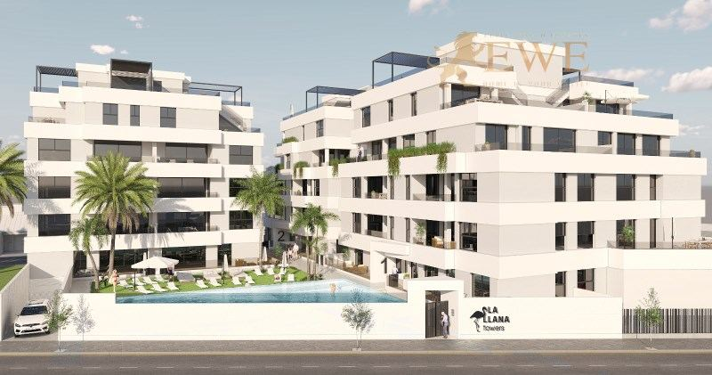
San Pedro del Pinatar
New flat in San Pedro del Pinatar
259.000 €
3 dormitorios · 2 baños · 89.13 m²Ref. EWE3369
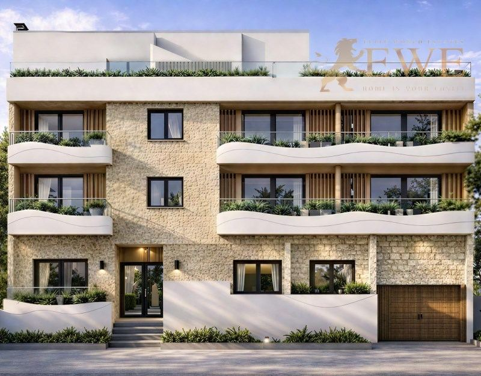
San Pedro del Pinatar
Elegant apartment 200 m from the beach in San Pedro del Pinatar
267.400 €
2 dormitorios · 2 baños · 72 m²Ref. EWE3719
Entrega: 4Q 2027
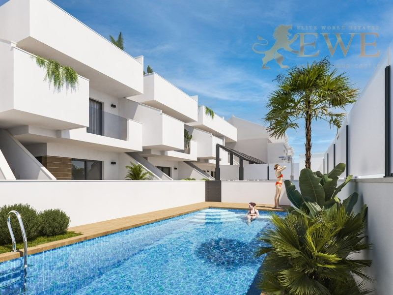
San Pedro del Pinatar
New bungalow 2 km from the sea in San Pedro del Pinatar
269.000 €
3 dormitorios · 2 baños · 72 m²Ref. EWE3589
Entrega: 4Q 2026
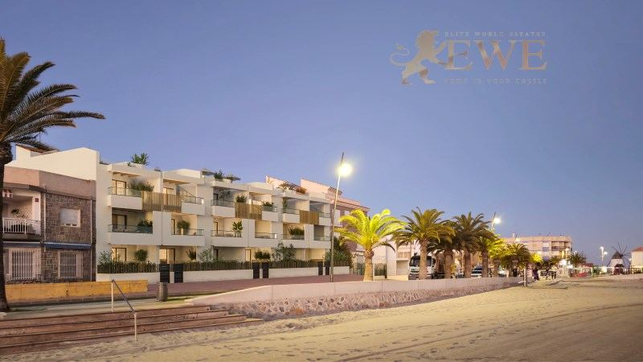
San Pedro del Pinatar
Modern first line flat in Lo Pagan
270.000 €
1 dormitorio · 1 baño · 43 m²Ref. EWE3341
Entrega: 1Q 2027
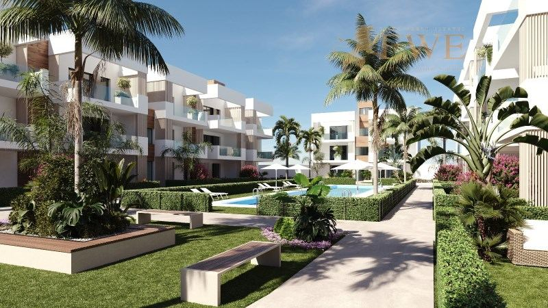
San Pedro del Pinatar
Modern Apartment 2 km from the Beach in San Pedro del Pinatar
277.900 €
2 dormitorios · 2 baños · 80 m²Ref. EWE3759
Entrega: 4Q 2026
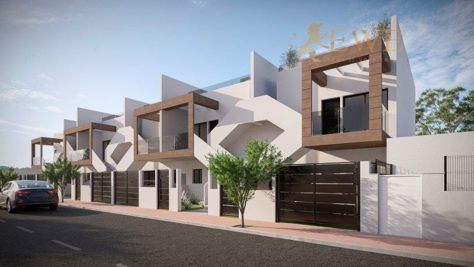
San Pedro del Pinatar
New bungalow less than 2 km from the sea in San Pedro
279.000 €
2 baños · 70 m²Ref. EWE3909
Entrega: 2028
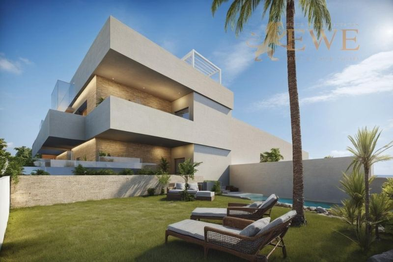
San Pedro del Pinatar
Bungalow just 500 m from the beach in San Pedro del Pinatar
299.950 €
2 dormitorios · 2 baños · 85 m²Ref. EWE3413
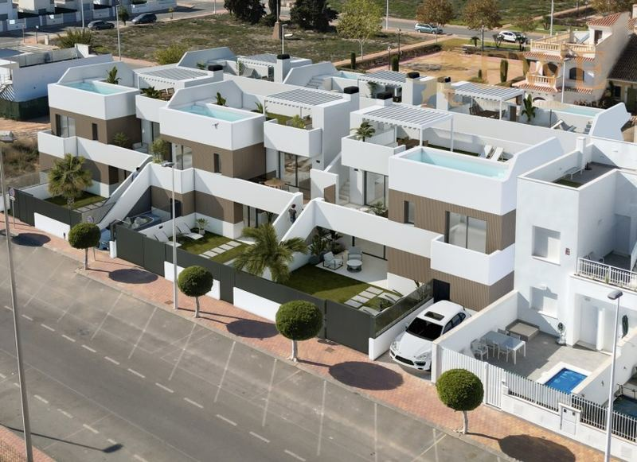
San Pedro del Pinatar
Intimate bungalow 800 metres from the beach in Lo Pagan
324.900 €
2 dormitorios · 2 baños · 67 m²Ref. EWE3575
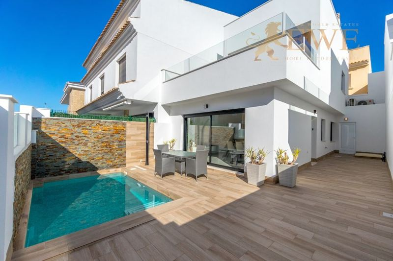
San Pedro del Pinatar
Excellent terraced house 5 km from the beach in San Pedro del Pinatar
380.000 €
3 dormitorios · 2 baños · 104 m²Ref. EWE3462
Entrega: 2026
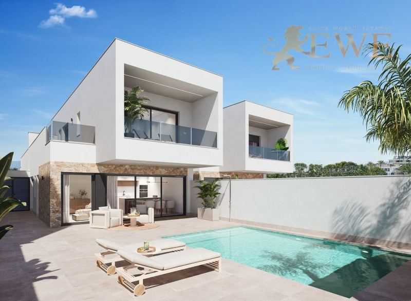
San Pedro del Pinatar
Excellent villa with pool in San Pedro del Pinatar
397.000 €
3 dormitorios · 3 baños · 100 m²Ref. EWE3437
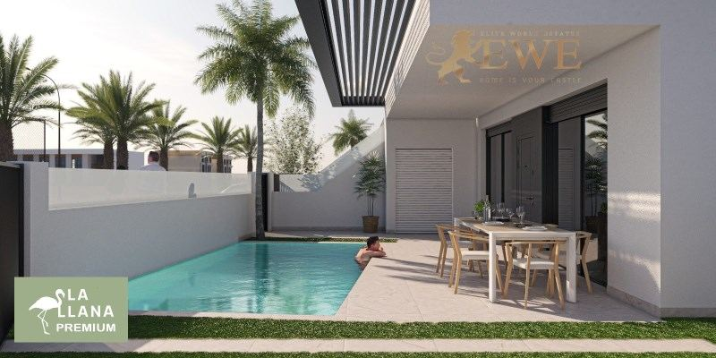
San Pedro del Pinatar
New apartment with private pool in San Pedro del Pinatar
399.000 €
3 dormitorios · 2 baños · 87.11 m²Ref. EWE3377
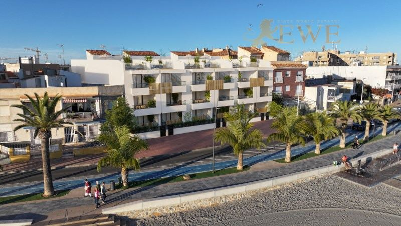
San Pedro del Pinatar
Beachfront flat with sea views in Lo Pagan
425.000 €
2 dormitorios · 1 baño · 78 m²Ref. EWE3342
Entrega: 1Q 2027
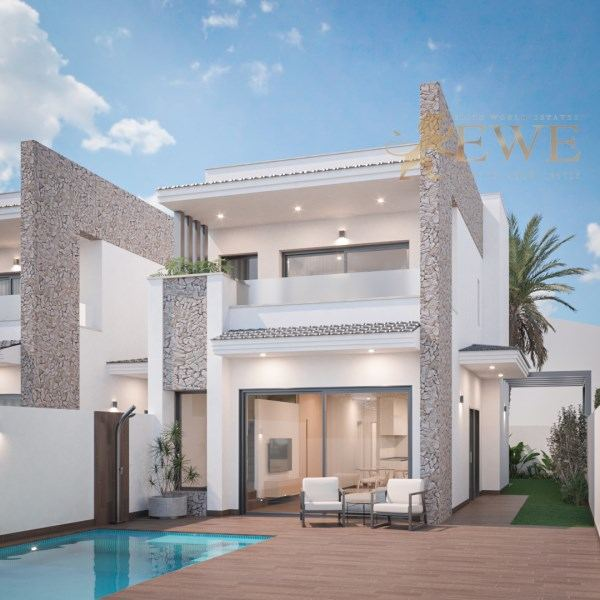
San Pedro del Pinatar
Villa with swimming pool in San Pedro del Pinatar
479.000 €
3 dormitorios · 3 baños · 112 m²Ref. EWE3592
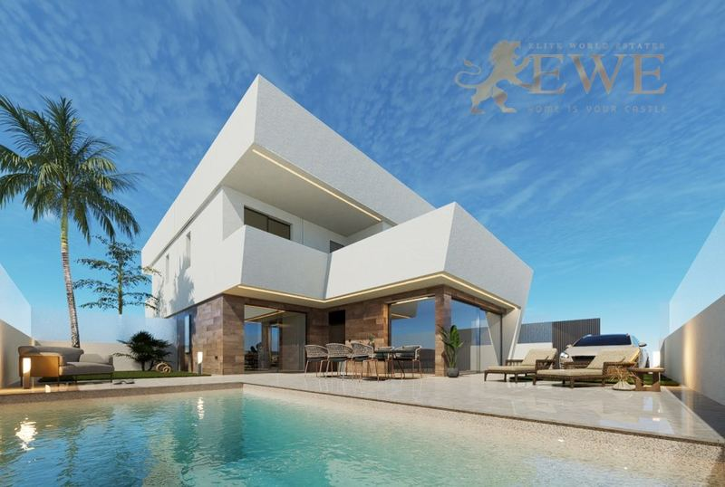
San Pedro del Pinatar
Excellent villa with pool 1 km from the beach in San Pedro del Pinatar
539.950 €
3 dormitorios · 3 baños · 125 m²Ref. EWE3707
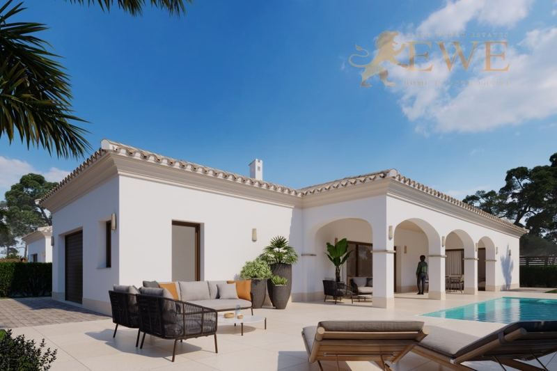
San Pedro del Pinatar
Mediterranean villa 400 m from the beach in San Pedro del Pinatar
809.950 €
3 dormitorios · 3 baños · 117 m²Ref. EWE3708
La ciudad
Vivir en San Pedro del Pinatar
San Pedro del Pinatar es una localidad de unos 27.000 habitantes en el norte de la Región de Murcia, justo en el límite con la Costa Blanca. Está entre dos mares: la laguna tranquila y cálida del Mar Menor a un lado y el Mediterráneo abierto al otro.
Entre la ciudad y el mar está el Parque Regional de las Salinas y Arenales, con salinas, dunas, viejos molinos y flamencos, y largas playas naturales en el lado del Mediterráneo. Lo Pagán, la parte costera, es conocida por su paseo, su puerto deportivo y los baños de lodo a orillas del Mar Menor.
La vida es tranquila y los precios son más bajos que en la mayor parte de la costa. El aeropuerto de la Región de Murcia está a unos 35 minutos en coche, el de Alicante a unos 50 minutos, y Torrevieja a unos 20 minutos.
Dónde comprar
Las principales zonas de San Pedro del Pinatar
Lo Pagán
La parte costera de la ciudad, en el Mar Menor, con el paseo, el puerto deportivo y los baños de lodo. Pisos cerca del agua.
Centro
Tiendas, mercados y servicios a pie, a 1 o 2 km de la playa. Pisos nuevos y bungalows para vivir todo el año.
Villananitos
Una zona de playa tranquila en el Mar Menor, junto a Lo Pagán. Pisos y casas cerca del agua.
Afueras
Zonas residenciales más nuevas a pocos kilómetros del mar, con villas y adosados con piscina privada.
Presupuesto
Cuánto cuesta comprar en San Pedro del Pinatar
Al precio se suman impuestos y gastos. Para una vivienda nueva de 231.900 €, por ejemplo, son 23.190 € de IVA y 3.478 € de AJD, más notaría, registro y abogado. En la segunda mano los impuestos son otros, así que pídanos siempre la cifra exacta de la vivienda que le guste.
| Obra nueva | 10 % IVA + 1,5 % AJD |
|---|---|
| Segunda mano | 7,75 % ITP |
| Notaría, registro, abogado | aprox. 1,5–2,5 % del precio |
| Cada año | IBI y gastos de comunidad, según la vivienda |
Preguntas
Comprar vivienda en San Pedro del Pinatar: preguntas y respuestas
¿Cuánto cuesta un piso en San Pedro del Pinatar?
Nuestros pisos nuevos en San Pedro del Pinatar empiezan hoy en 151.900 €, y la mayoría de 1 o 2 dormitorios cuestan entre 150.000 € y 330.000 €. Los bungalows cuestan desde unos 270.000 € y las villas con piscina privada de unos 400.000 € a 810.000 €.
¿Qué son los baños de lodo de Lo Pagán?
A orillas del Mar Menor, en Lo Pagán, hay charcas naturales de lodo rico en minerales. Mucha gente se cubre de barro y luego se aclara en la laguna, una tradición local en verano.
¿A qué distancia está San Pedro del Pinatar del aeropuerto?
El aeropuerto de la Región de Murcia, en Corvera, está a unos 35 minutos en coche, y el de Alicante-Elche a unos 50 minutos.
¿Qué gastos hay además del precio?
En la Región de Murcia se paga un 10 % de IVA y un 1,5 % de AJD en obra nueva, y un 7,75 % de ITP en segunda mano. Notaría, registro y abogado suman alrededor de un 1,5–2,5 %.
¿Pueden comprar vivienda los extranjeros en San Pedro del Pinatar?
Sí. Cualquier persona puede comprar una vivienda en España. Necesita un NIE y normalmente una cuenta bancaria española, y le ayudamos con las dos cosas. Consulte nuestra guía del NIE.


¿Busca casa en San Pedro del Pinatar?
Cuéntenos su presupuesto y lo que necesita. Respondemos en un día laborable, en español, inglés, alemán o polaco.